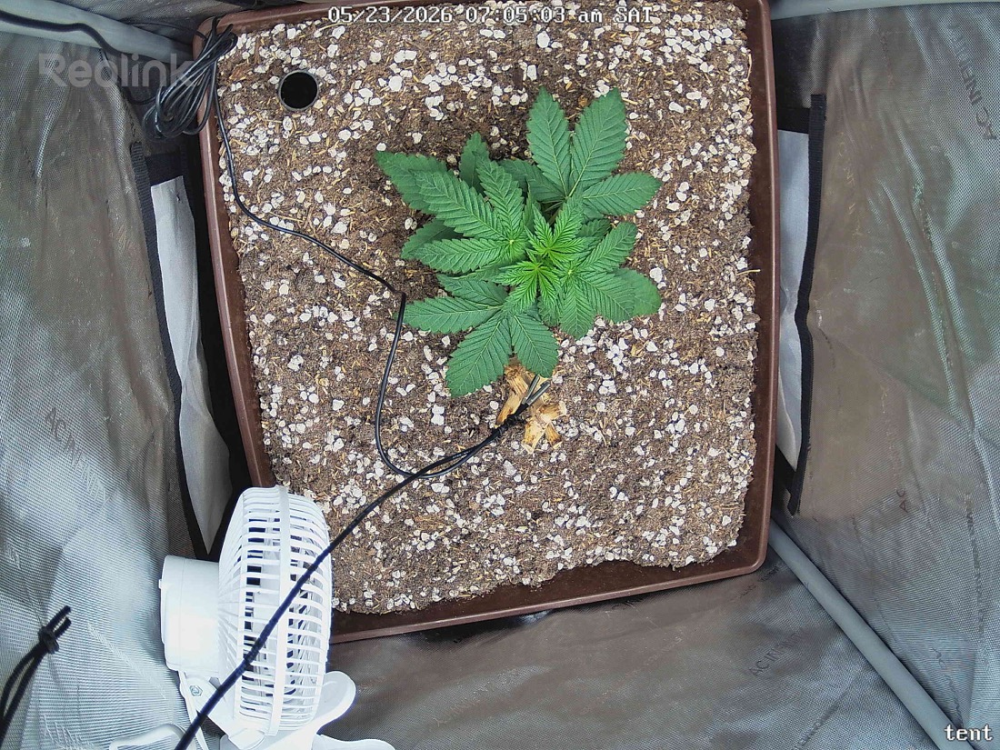

← All reports
May 23, 2026
Sat May 23, 2026 — 7:05 AM

Prognosis
Daily prognosis — 2026-05-23
- Growth: Visible 24h expansion — canopy footprint is noticeably wider, with the upper fan leaves longer and more fingers showing definition. New node development is on track; stacking remains tight.
- Color: Uniform deep green across the canopy, no fade or paling. Slight sheen consistent with healthy turgor.
- Structure/posture: Leaves are flat and reaching outward (slight praying tilt on the top set) — classic "happy at current PPFD" posture. No tacoing, no cupping, no drooping.
- Stress signs: None. No burnt tips, no interveinal chlorosis, no edge crisp. The small yellowed leaflet near the base is the same dropped/damaged piece visible yesterday — not a new symptom.
- Soil: Surface looks slightly drier than yesterday (perlite more prominent, darker organic matter receding) — expected on day 4 since last water (5/19). No crust, no fungal growth, no gnats visible.
- Phase check: ~25 days from germ, ~18 days in tent. You're solidly in early veg and the plant is ahead of a stretched/lanky timeline — short internodes + wide leaf span at 400 PPFD is exactly the profile you want before training.
- Next actions:
- Plan a top-water tomorrow or day after (5/24–5/25) — you'll be at the 5–6 day mark and the surface is drying.
- PPFD stays at 400; no reason to push further until you see the next growth response plateau.
- Start thinking about a low-stress training plan (topping vs. LST) — node count is approaching the typical decision point.
Overall: Textbook healthy early veg — keep doing what you're doing.